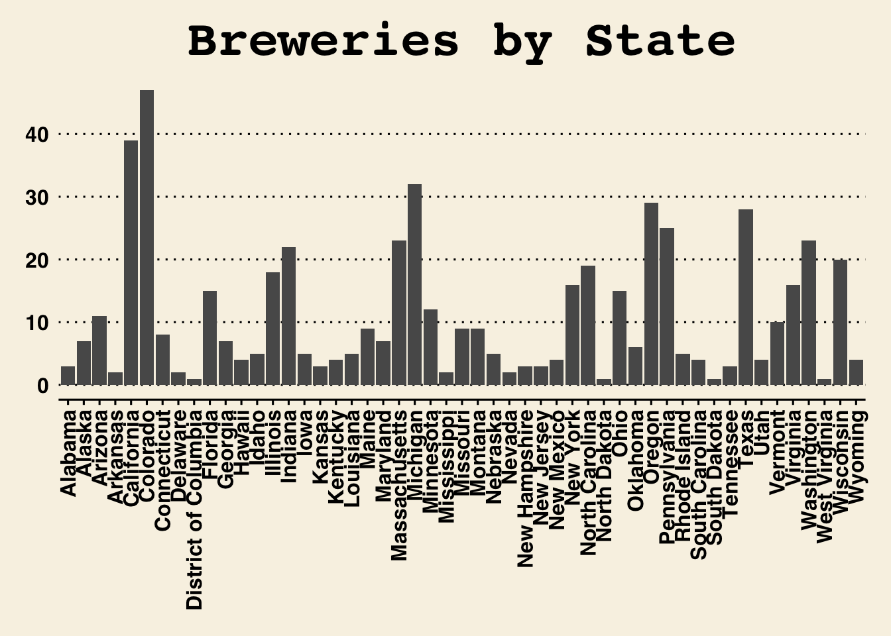
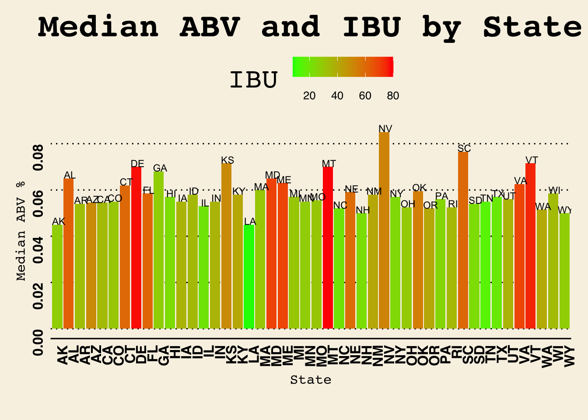
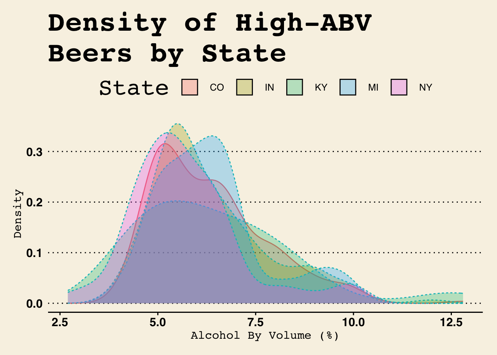
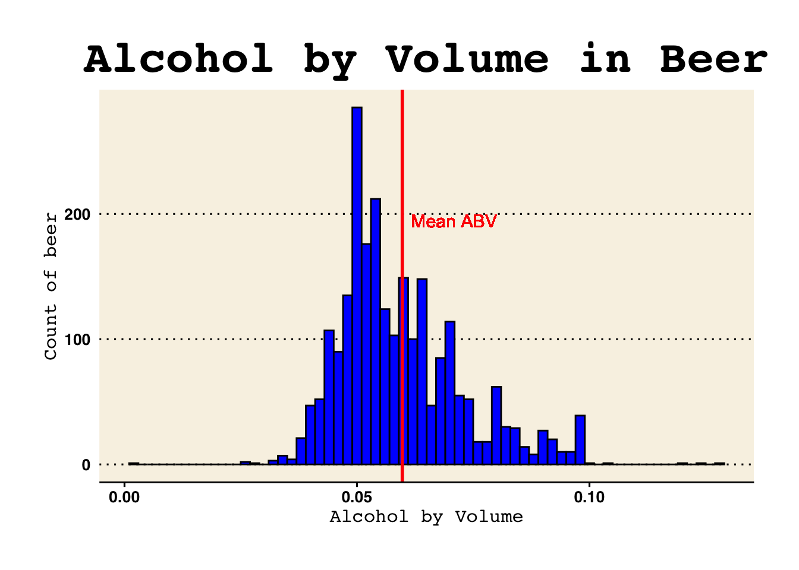
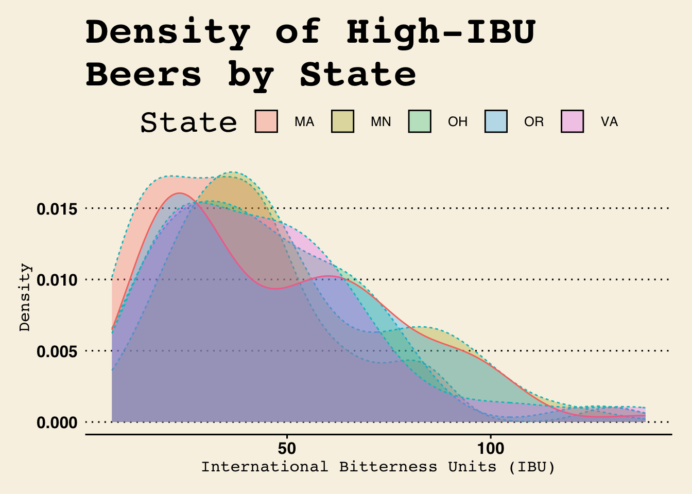
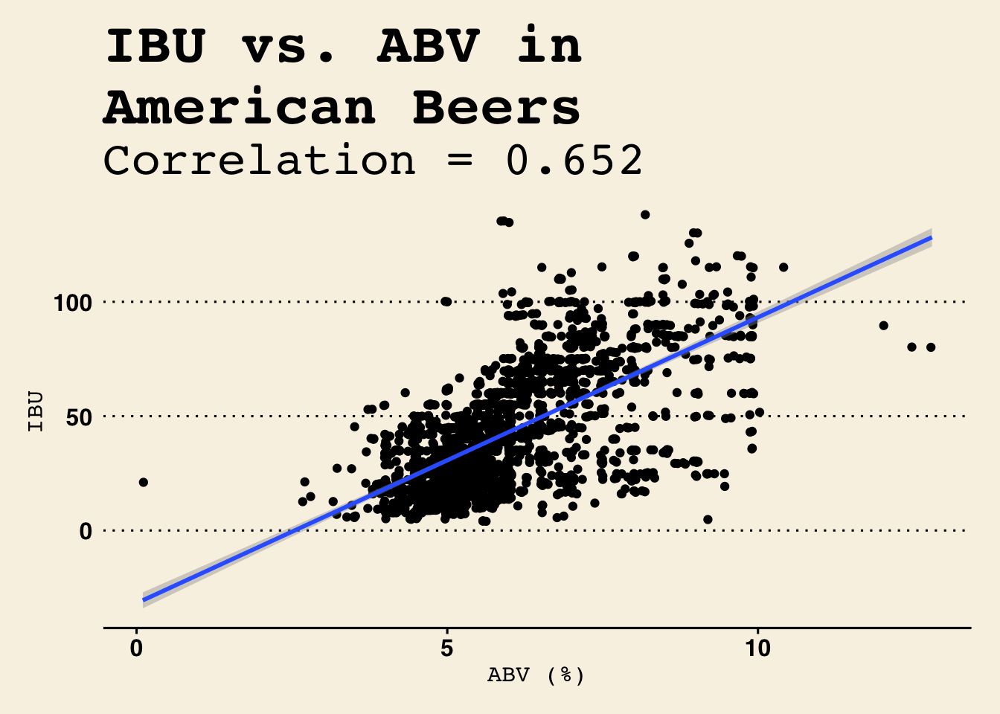
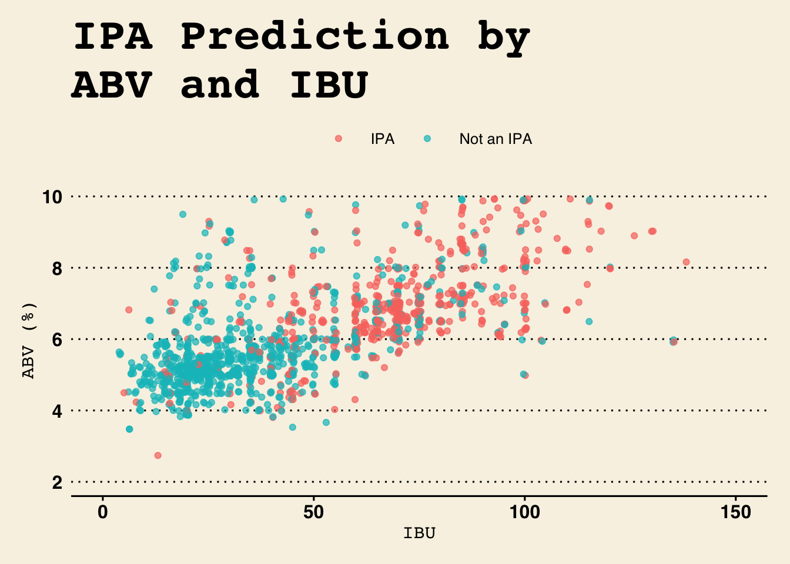
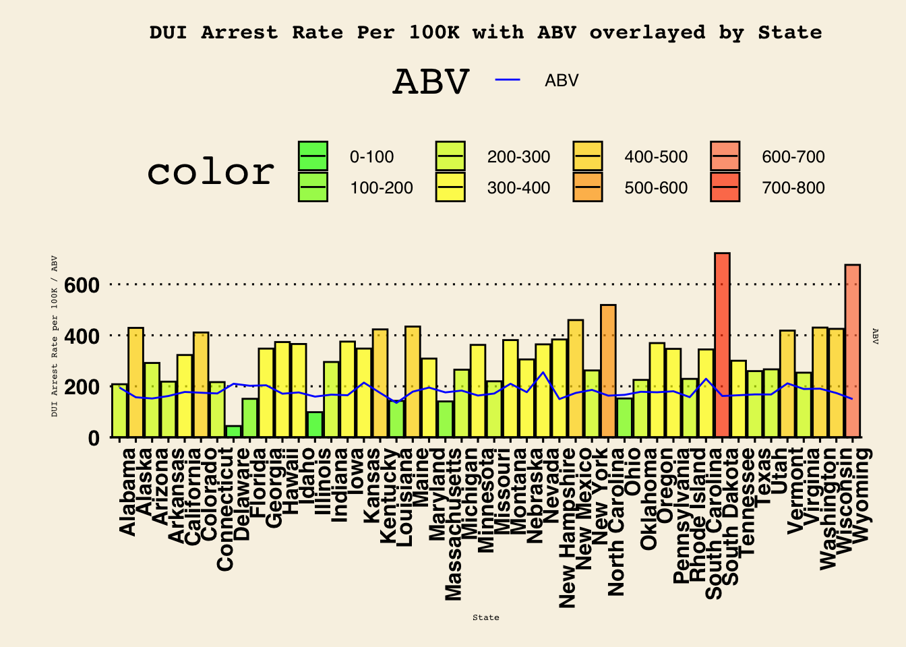

Dear CEO and CFO of Budweiser,
We are pleased to present the results of our analysis of the data you provided. Our objective was to gain a deeper understanding of the relationship between alcohol by volume (ABV) and various other factors, such as the number of breweries in each state, the bitterness of beer, and the correlation between bitterness and alcohol content.
In conducting our analysis, we utilized various statistical tools and techniques, including scatter plots, bar charts, and KNN classifiers. Our findings have uncovered several interesting insights that we believe will be of great value to Budweiser.
Please find below a summary of our key findings. If you have any questions or comments, we would be happy to discuss them further. Our aim is to provide you with results that are clear, concise, and actionable.
The data set contained 558 breweries across the United States, with the top five states accounting for 31% of the total (175 breweries). The states were ranked in order of largest to smallest, with Colorado being the largest with 8.42% of the total, followed by California (6.99% of the total), Michigan (5.73% of the total), Oregon (5.20% of the total), and Texas (5.02% of the total)

Several values were missing for both the ABV and IBU columns. We needed to make sure that we were approaching these missing values in the correct way. First we determined that these were Missing-At-Random. Then we determined that the proportion of missing rows to total was somewhat significant at 41.7%. Unfortunately, this high number means some of our predictions using IBU may be slightly skewed towards the mean.
At this point, to deal with the missing values, we used an algorithm known as multivariate imputation by chaining predictive means equations. This method works by predicting missing values using the average value and basing this on surrounding factors that are known (e.g. predicting missing ABV using IBU):
summary(beer_brews[,c("ABV", "IBU")])## ABV IBU
## Min. :0.00100 Min. : 4.00
## 1st Qu.:0.05000 1st Qu.: 21.00
## Median :0.05600 Median : 35.00
## Mean :0.05977 Mean : 42.71
## 3rd Qu.:0.06700 3rd Qu.: 64.00
## Max. :0.12800 Max. :138.00
## NA's :62 NA's :1005(nrow(beer_brews[!complete.cases(beer_brews),]) / nrow(beer_brews)) * 100.0 # percentage of rows that are missing from the data## [1] 41.70124cor(beer_brews$ABV, beer_brews$IBU, use = "complete.obs") # 0.67 correlation between ABV and IBU, good predictor for multi-imputation, "mice"## [1] 0.6706215summary(beer_brew_whole[,c("ABV", "IBU")])## ABV IBU
## Min. :0.00100 Min. : 4.0
## 1st Qu.:0.05000 1st Qu.: 22.0
## Median :0.05600 Median : 35.0
## Mean :0.05975 Mean : 42.9
## 3rd Qu.:0.06700 3rd Qu.: 64.0
## Max. :0.12800 Max. :138.0This chart presents a summary of the median Alcohol by Volume (ABV) and International Bitterness Unit (IBU) values of beers produced in different states across the United States. To compile the information, the Beer and Breweries datasets were merged and the median values of ABV and IBU were calculated for each state of production. The states with the highest median IBU values are Montana (80 IBU), Delaware (77.5 IBU), and Vermont (75 IBU). The states with the highest median ABV values are Nevada (0.085), South Carolina (0.0765), Vermont (0.0715), and Kansas (0.0715).

We could pick the states which produce beers with the greatest ABV and IBU, respectively, but it might be more interesting to determine trends of states that are producing these high-scoring beers. To make sure we were only picking beers with true ABV/IBU numbers, we used the original data set without missing values imputed. From these results, we found the states that tended to produce higher ABV beers were Colorado, Kentucky, Indiana, New York, and Michigan.
From the plot below, the data appears to indicate that while Colorado produces the single highest-ABV beer, “Lee Hill Series Vol. 5 - Belgian Style Quadrupel Ale,” it is outpaced by Kentucky in concentration of high-ABV beers produced:
beer_brew_abv[order(beer_brew_abv$ABV, decreasing = TRUE )[1:6],c("Beer_Name", "State", "ABV")] ## Beer_Name State ABV
## 384 Lee Hill Series Vol. 5 - Belgian Style Quadrupel Ale CO 0.128
## 9 London Balling KY 0.125
## 149 Csar IN 0.120
## 387 Lee Hill Series Vol. 4 - Manhattan Style Rye Ale CO 0.104
## 344 4Beans NY 0.100
## 57 Wizard Burial Ground MI 0.099hi_abv = beer_brew_abv[beer_brew_abv$State %in% c("CO", "MI", "KY", "IN", "NY"),]
par(mar=c(10,10,0,0)) #it's important to have that in a separate chunk
ggplot(data = hi_abv, aes(x = ABV * 100, fill = State, linetype = (State != "CO"), color = (State != "CO"))) +
geom_density(alpha = 0.3, position="identity") +
labs(x = "Alcohol By Volume (%)", y = "Density", title="Density of High-ABV \nBeers by State") +
guides(color = "none", linetype = "none") +
theme_wsj()+
theme(axis.title=element_text(size=12))
In this analysis, the distribution of Alcohol by Volume (ABV) in 2,410 beers was examined. The histogram of the ABV revealed a right-skewed distribution, with the mean ABV of 5.97% and median of 5.60%.
## Min. 1st Qu. Median Mean 3rd Qu. Max.
## 0.00100 0.05000 0.05600 0.05975 0.06700 0.12800
We see a similar trend happen when we discuss IBU for these beers as well. The aptly named, “Bitter Bitch Imperial IPA” brings Oregon to the top of the list, despite appearing to have fewer beers at the high end of the IBU distribution.
## Beer_Name State IBU
## 1857 Bitter Bitch Imperial IPA OR 138
## 1719 Troopers Alley IPA VA 135
## 1305 Dead-Eye DIPA MA 130
## 625 Bay of Bengal Double IPA (2014) OH 126
## 425 Abrasive Ale MN 120
## 1452 Heady Topper VT 120
As hinted to earlier, during the missing value imputation for ABV and IBU, we noticed that the two columns seemed to be adequate predictors for one another. The data indicates there is a strong positive correlation between ABV and IBU at an r-value of 0.652 (r-values range between -1.0 and 1.0):
## ABV IBU
## Min. :0.00100 Min. : 4.00
## 1st Qu.:0.05000 1st Qu.: 21.00
## Median :0.05600 Median : 35.00
## Mean :0.05977 Mean : 42.71
## 3rd Qu.:0.06700 3rd Qu.: 64.00
## Max. :0.12800 Max. :138.00
## NA's :62 NA's :1005## [1] 0.6523603
It was wondered whether there was a strong predictive factor that we could use to test the hypothesis that IPAs tend to be more bitter and have a higher alcohol content than other types of ales. In order to perform this analysis, we first filtered out all non-ales from the data set, then we used a predictive machine learning algorithm known as K-nearest neighbors, which clumps beers together based on IBU and ABV, and uses these clusters to predict whether a test beer is likely an IPA or another type of ale.
From the model we built using the K-nearest neighbors approach, we were able to predict with 79.6% accuracy whether a given ale was an IPA or not.

## Confusion Matrix and Statistics
##
## Reference
## Prediction FALSE TRUE
## FALSE 250 49
## TRUE 45 116
##
## Accuracy : 0.7957
## 95% CI : (0.7559, 0.8316)
## No Information Rate : 0.6413
## P-Value [Acc > NIR] : 4.129e-13
##
## Kappa : 0.5534
##
## Mcnemar's Test P-Value : 0.757
##
## Sensitivity : 0.8475
## Specificity : 0.7030
## Pos Pred Value : 0.8361
## Neg Pred Value : 0.7205
## Prevalence : 0.6413
## Detection Rate : 0.5435
## Detection Prevalence : 0.6500
## Balanced Accuracy : 0.7752
##
## 'Positive' Class : FALSE
## In this analysis, the relationship between Alcohol by Volume (ABV) in beer produced by a state and the corresponding DUI arrest rate was examined. A correlation was calculated between the two variables and the results showed a negative correlation coefficient of -0.07, indicating that there is no positive relationship between the two variables. This suggests that producing beer with higher alcohol content does not necessarily result in an increase in DUI arrests.

From our investigations, we raised a number of considerable questions we were able to answer. We found that just five states accounted for 31% of all breweries, with Colorado alone accounting for an impressive 8%. We found there was a significant portion of the available beer data which had not listed International Bitterness Units (IBU), opening the field to furhter investigation and analysis. We found both the median and mean Alcohol-by-Volume (ABV) metrics for American beers to rest around 5.6%. And the data indicated there was a strongly predictive factor (~79% accuracy) between IBU, ABV, and whether or not a beer would be considered an Indian Pale Ale (IPA).
Outside of the initial topics proposed for investigation, we went out of our way to gather relevant Driving Under the Influence (DUI) statistics on a state basis. We compared these additional findings with the data from the beers and breweries provided, and we found the data to indicate that there was not a strong correlation between states that produce high-ABV beers and number of DUI incidents. Although this may be confounded by the fact that the beers produced in these states tend to ship both domestically and abroad, we determined this should have an overall positive impact on the marketing and sales division for these more high-caliber products.